Uživatelská příručka je koncipována jako návod pro uživatele programu RadAgro. Příručka shrnuje hlavní body práce s programem a upozorňuje na důležité zásady při zadávání dat a nastavení parametrů pro výpočet průběhu změn radioaktivní kontaminace jednotlivých ploch v zájmovém území.
Instalace¶
Instalace programu RadAgro je vcelku jednoduchá, vzhledem k tomu, že je program koncipován jako plug-in programu QGIS. Odpadá tak potřeba instalovat další software nutný pro práci programu.
Program RadAgro je ke stažení na GitHubu: https://github.com/JakubBrom/RadAgro. Aktuální verzi programu stáhneme pomocí zeleného tlačítka Code ve formátu zip. Program nainstalujeme do prostředí QGIS následovně:
1. V hlavní nabídce klikneme na záložku Zásuvné moduly a dále Správa a instalace zásuvných modulů2. Zvolíme Instalovat ze ZIPu3. Najdeme stažený zip soubor s instalací programu RadAgro a klikneme na tlačítko Instalovat zásuvný modul4. Potvrdíme, že jsme si vědomi bezpečnostního rizika
V případě, že byl program správně nainstalován, QGIS napíše že istalace proběhla v pořádku. Program se objeví v seznamu nainstalovaných zásuvných modulů. V nabídce Zásuvné moduly se vytvoří záložka RadAgro se spouštěčem. Obdobně se vytvoří ikona 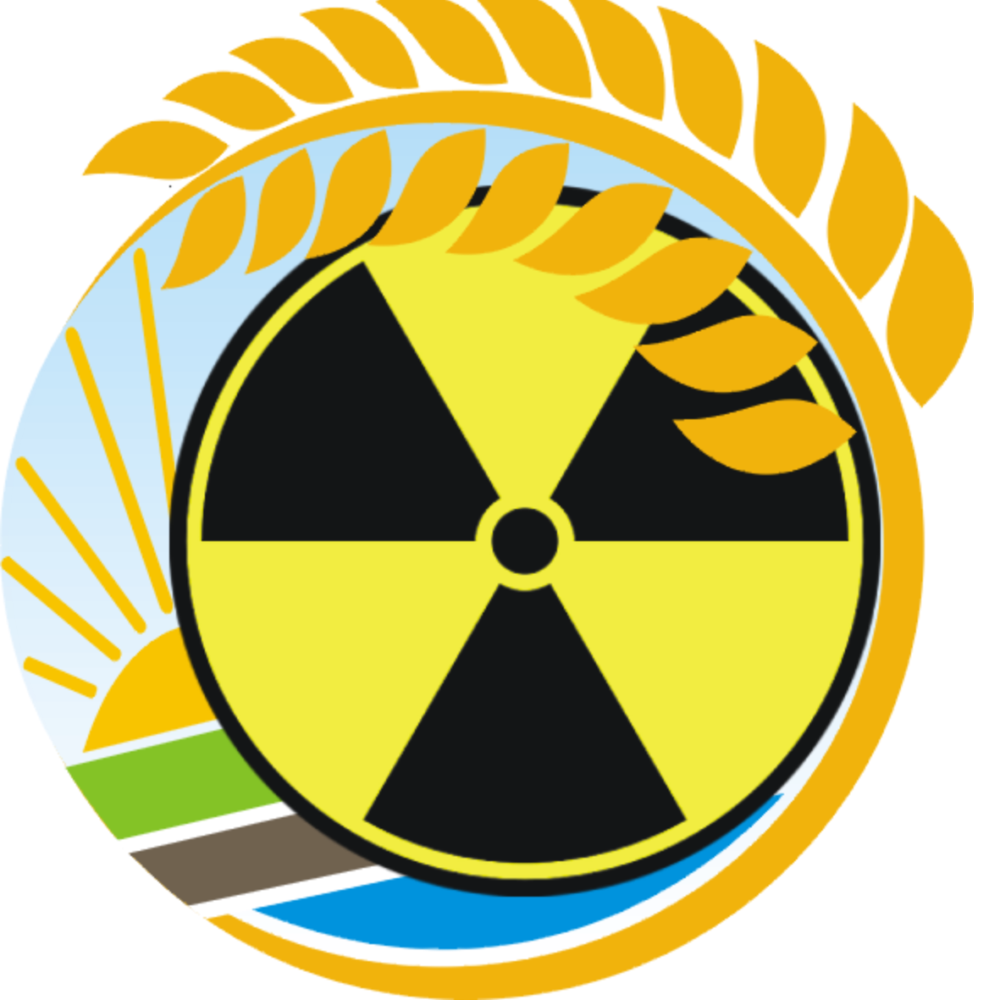 na panelu nástrojů.
{kind=link}
V budoucnu předpokládáme umístění programu RadAgro přímo do reozitáře zásuvných modulů QGIS, takže nebude nutné program stahovat z externích zdrojů.
Program RadAgro lze odinstalovat ve formuláři Správce zásuvných modulů v programu QGIS.
Vstupní data¶
Program RadAgro je koncipován s ohledem na minimalizaci množství vstupních dat. Předpokladem je využití dostupných vstupních dat, jejichž příprava nepředstavuje neúměrnou zátěž. Využita jsou prostorová (GIS) data a číselné hodnoty. Zásadní pro výpočet časoých změn radioaktivní kontaminace území a jednotlivých ploch je správné nastavení parametrů modelu, s ohledem na předpokládaný vývoj a následná opatření po radiační havárii. Hlavními vstupy jsou:
1. Rastrová vrstva depozice radionuklidu na zájmovém území. Depozice je uvedena jako měrná aktivita v2. Rastrová vrstva úhrnu srážek v průběhu depozice radionuklidu (ca 24 - 48 hodin od radiační události). V případě, že není informace o prostorové distribuci úhrnu srážek k dispozici, lze zadat průměrnou hodnotu pro zájmové území. Úhrn srážek je udáván v mm.3. Vektorová vrstva plodin v zájmovém území. Hodnoty pro plodiny jsou textové.4. Vektorová vrstva hlavních půdních jednotek (1 - 78). Hodnoty pro HPJ jsou celočíselné.5. Rastrová vrstva digitálního modelu terénu, tzn. výškopis udávaný v m n. m.
Rastrové vrstvy mohou mít odlišné prostorové rozlišení (velikost pixelu) a odlišný prostorový rozsah. Důležité je, aby se jednotlivé vrstvy překrývaly. Program provede ořez vrstve na překryvnou plochu a převzorkuje rastrové vrstvy na velikost nejmenšího použitého prostorového rozlišení. Přestože program automaticky provádí sjednocení geografického zobrazení použitých rastrů, doporučujeme v případě všech GIS vrstev použití shodných souřadnicových systémů!
Vektorové vrstvy mohou mít odlišnou velikost, výpočet bude proveden pouze pro překrývající se části rastrových a vektorových vrstev. Vektorové vrstvy musí mít shodné souřadnicové systémy!
Vedle GIS vrstev musí uživatel zadat informace o osevním postupu, případně o termínech seče trvalých travních porostů. Osevní postup je pro zájmové území volen jako univerzální s ohledem na omezení množství zadávaných dat. Podrobnosti jsou uvedeny dále.
Uživatel programu RadAgro může měnit a upravovat řadu přednastavených parametrů a optimalizovat tak výpočet vývoje změn radioaktivní kontaminace zájmového území.
Uživatelské rozhraní a zadávání dat¶
Spuštění aplikace¶
Po spuštění programu pomocí ikony z panelu nástrojů nebo pomocí spouštěče ze záložky Zásuvné moduly dojde ke spuštění uvítacího informačního okna:
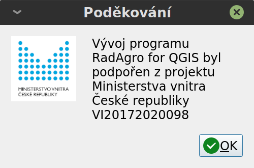{kind=link}
Úvodní obrazovka programu RadAgro
Uživatelské rozhraní¶
Uživatelské rozhraní programu RadAgro se snaží o maximální jednoduchost a přehlednost. Z tohoto důvodu je uživatelské okno programu rozděleno do záložek, každá záložka pak obsahuje několik listů. Uživatelské rozhraní se snaží navést uživate při zadávání dat tak, aby byla data zadána správně a následný výpočet proběhl bez obtíží. Následující obrázek ukazuje uživatelské rozhraní po spuštění
{kind=link}
Uživatelské prostředí programu RadAgro
Vstupy¶
Záložka Vstupy shrnuje část programu, do které jsou zadávány externí vstupy, jako jsou vektorové a rastrové vrstvy, číselné hodnoty apod. V následujícím textu jsou popsány všechny vstupy a jejich vlastnosti.
Radioaktivní depozice a sledované období¶
List obsahuje hlavní nastavení výpočtu radioaktivní kontaminace a její změny v čase. Nastavit lze následující vlastnosti:
1. Vrstva depozice - rastrová vrstva měrné plošné aktivity radionuklidu2. Druh kontaminantu - v aktuální verzi programu lze volit bď cesium 137 a nebo stroncium 90.3. Datum radiační události - datum, kd došlo k úniku radionuklidu do prostředí4. Období predikce - nastavení konce časové řady. Odhad vývoje radioaktivní kontaminace je prováděn v měsíčním kroku. Doba, pro kterou je prováděn výpočet v podstatě není omezená, nicméně export dat do vektorvé vrstvy je omezen maximálním možným počtem sloupců, který je 2000, tzn., že maximální počet exportovaných měsíců je 1992, tj. 166 let. Pokud je zvoleno období delší než 166 let, respektive 1992 měsíců, je možné výsledky zobrazit v uživatelském rozhraní programu RadAgro v záložce Výsledky. Export je v takovém případ oříznut na prvních 1992 vypočtených měsíců. Při výpočtu je nicméně potřeba uvažovat účelnost, čas potřebný pro výpočet a uložení dat a dále následnou možnost s daty dále pracovat.5. Referenční úrovně depozice - stanovují hranice měrné aktivity pro kategorie tzv. referenčních úrovní. Jedná se o rozsah hodnot měrné aktivity, které neznamenají omezení aktivit v zájmovém prostoru (RU1), které mohou znamenat významná omezení aktivit v zájmovém prostoru (RU2) a nebo vymezují území, kde nelze provádět žádné další aktivity (RU3) . Vymezení těchto území je významné z důvodu aplikace následných opatření, jako je odstranění biomasy plodin, využití kultivace porostů a osevních postupů apod. Přednastavené hodnoty jsou a .6. Odstranění biomasy v časné fázi radiační události - Odstranění biomasy v časné fázi radiační události, tzn. v co možná nejkratším období po radiační události (v řádu týdnů, max. měsíců) je naprosto zásadním momentem pro ochranu zemědělské půdy. V případě zaškrtnutí políčka je uvažováno plošné odstranění nadzemní biomasy plodin v zájmovém území a následné pokračování zemědělské činnosti (osevních postupů) až v roce následujícím.
Ukázka zadání dat a nastavení je na následujícím obrázku
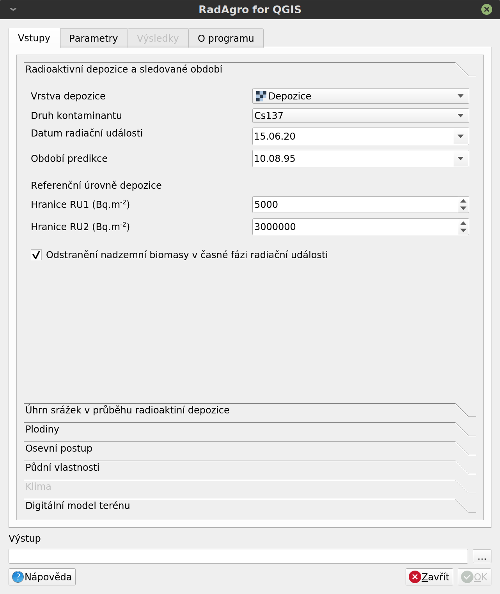{kind=link}
Zadání dat radioaktivní kontaminace území
Úhrn srážek v průběhu radioaktivní depozice¶
Úhrn srážek představuje zásadní vstup, který rozhoduje o distribuci radioaktivní depozice mezi porost (biomasu rostlin) a půdu v časné fázi radiační události. Podrobnosti jsou uvedeny v technické dokumentaci.
Úhrn srážek (v mm) představuje úhrn stážek za období depozice radionuklidu v zájmovém území. Uvažováno je období v délce trvání přibližně 24 až 48 hodin.
Úhrn srážek lze do programu zadat buď jako konstaní hodnotu pro celé zájmové území a nebo ve formě rastrové vrstvy. Možnosti zadání jsou uvedeny na následujícím snímku
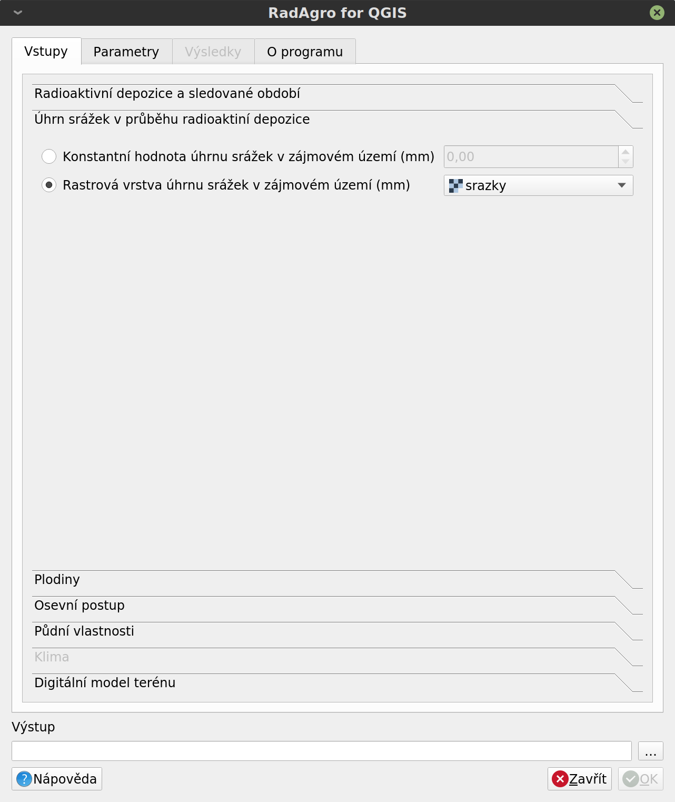{kind=link}
Zadání úhrnu srážek v období depozice radionuklidu
Plodiny¶
Záložka Plodiny umožňuje volbu vektrové vrstvy obsahující informace o distribuci plodin v zájmovém území a slouží k přiřazení jednotlivých plodin. Postup zaání hodnot je následující:
1. Uživatel zvolí vrstvu s plodinami a pole obsahující infromace o plodinách. Program automaticky načte přehled všech polí atributové tabulky vrstvy.2. živatel vybere pole s informací o výskytu plodin. Načtení polí může chvilku trvat. Po zvolení pole s plodinami dojde k vytvoření přehledu všech unikátních hodnot uvedených v tabulce. Ke každé hodnotě je zároveň přiřazen rozbalovací seznam s plodinami obsaženými v databázi programu. Hodnoty ve zvoleném poli by měly mít textový formát.3. Uživatel přiřadí odpovídající plodinu z databáze plodině obsažené ve vektorové vrstvě.
Přiřazení hodnot jednotlivým plodinám předpokládá dodržení následujících zásad:
- Snažíme se přiřazovat hlavní plodiny. Meziplodiny (pro zelené hnojení) nemají z pohledu změny obsahu radionuklidů v prostředí zásadní význam, protože jejich biomasa zůstává na pozemku.
- Přiřazujeme plodiny, které budou obsaženy v osevním postupu. V případě, že je přiřazena plodina, která nebude dále obsažena v osevním postupu, bude pro danou plodinu vypočtena poze časná fáze radiační události
- Různým plodinám může být přiřazena stejná plodina (hodnota)
Uživatelské rozhraní programu s příkladem zadání hodnot je uvedeno na následujícím obrázku:
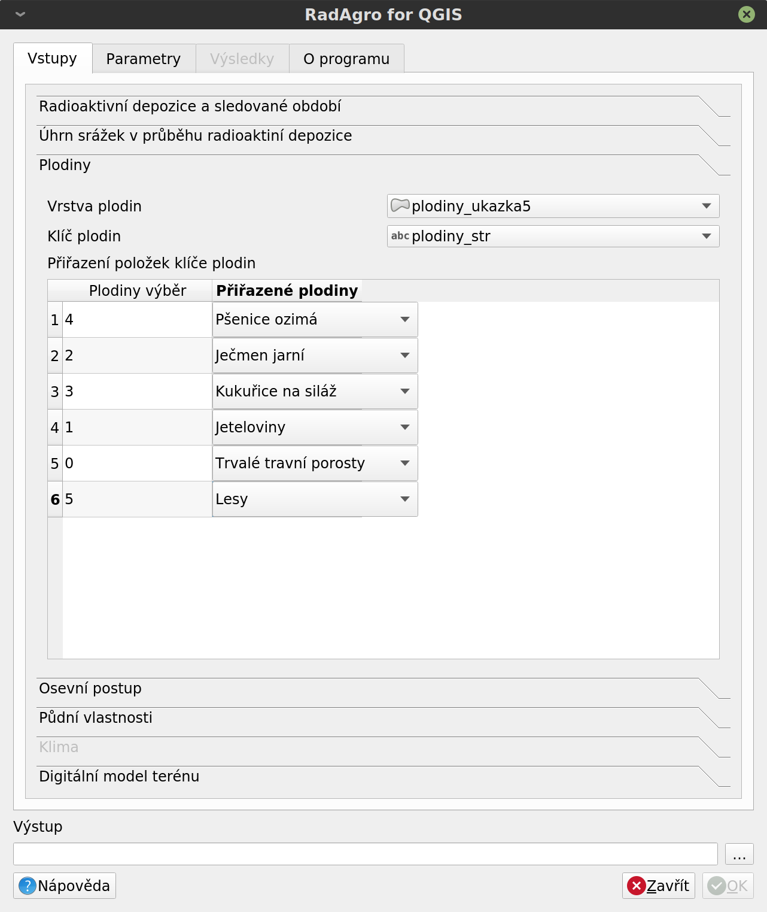{kind=link}
Ukázka zadání plodin do programu RadAgro. V uvedeném případě jsou pro plodiny obsažené ve vektorové vrstvě použity číselné kódy, které mají nicméně textovou podobu.
Osevní postup¶
Osevní postup je zadáván univerzálně pro celé zájmové území. Jedná se o kompromisní řešení mezi složitostí přípravy zadávaných dat a kvalitou výsledného výpočtu.
Program RadAgro na základě zadaného osevního postupu provádí výpočet změn radioaktivní kontaminace na daných plochách, přičemž se ve všech případech předpokládá odstranění nadzemní biomasy plodin v termínu sklizně. Pro plodiny v osevním postupu jsou stanoveny termíny setí/sadby a sklizně. Pro trvalé travní porosty jsou definovány termíny sklizně. Předpokladem je opakování osevního postupu v čase. V případě předpokládaných změn v osevním postupu může být výsledný osevní postup kombinací několika osevních postupů. Všechny uvedené termíny jsou v měsících.
Sestavení osevního postupu předpokládá střídání plodin. Opakované zadání stejné plodiny v osevním postupu způsobuje v aktuální verzi programu problémy. Doporučujeme plodiny v seznamu neopakovat. Jedná se o známý problém, který bude řešen v další verzi programu.
Do osevního postupu může být zadána též plodina, která není uvedena ve vstupní vektorové vrstvě. Tento postup nicméně nedoporučujeme s ohledem na další výpočty, jako je eroze půdy a přiřazení transferových koeficientů.
Program RadAgro předpokládá, že doba kultivace je v případě ozimů maximálně jedenáct měsíců, tzn., že pokud je termín výsevu např. v září, potom je termín sklizně v srpnu. Pokud je měsíc výsevu i sklizně shodný, předpokládá se, že je doba kultivace pouze jeden měsíc!
Trvalé travní porosty mohou být až trojsečné. Zde je opět předpoklad shodného managementu pro celé zájmové území.
Příklad zadání jednoduchého osevního postupu a termínů sečí ukazuje následující obrázek:
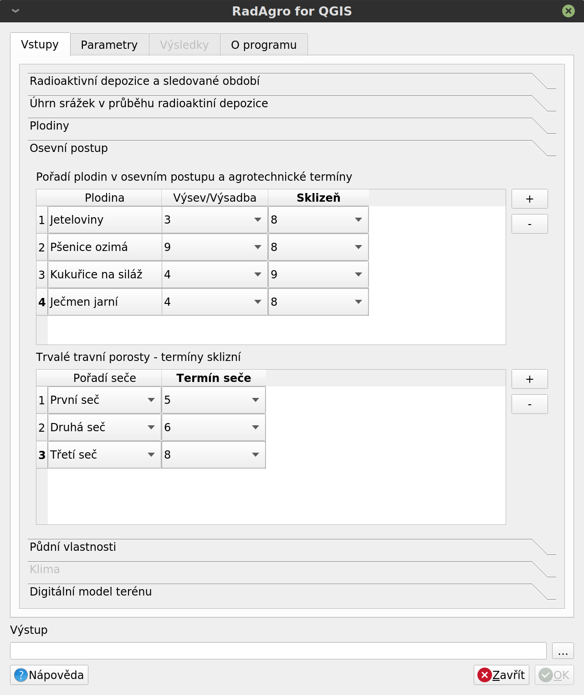{kind=link}
Ukázka zadání jednoduchého osevního postupu a termínů sklizní trvalých travních porostů. Všechny termíny jsou zadávány jako měsíce.
Půdní vlastnosti¶
Půdní vlastnosti jsou načítány ve formě rastrové vrstvy obsahující kódy hlavních půdních jednotek v zájmovém území. Kódy mosí být ve vrstvě uloženy ve formě celočíselných hodt v rozsahu 1 až 78, podle klasifikace hlavních půdních jednotek, viz Vyhláška č. 227/2018 Sb. nebo např. https://bpej.vumop.cz
Vektorová vrstva je uživatelem zvolena z polygonových vrstev načtených do programu QGIS. Program RadAgro umožňuje též použití jednotlivých vrstev z geodatabází. Taková vrstva musí být načtena do prostředí QGIS. Volba vrstvy v programu RadAgro je následující:
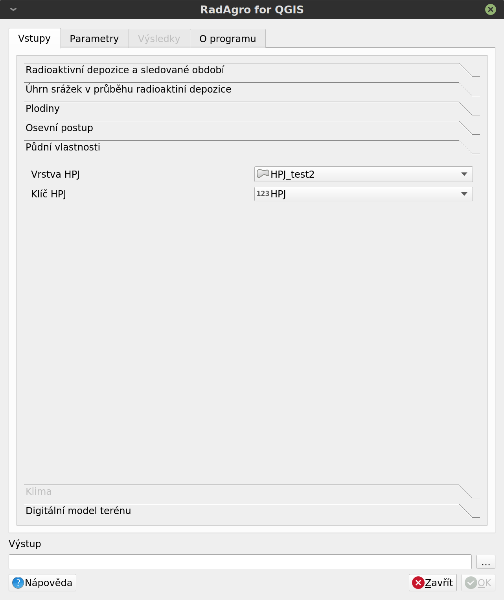{kind=link}
Vložení vrstvy hlavních půdních jednotek.
Klima¶
Záložka pro zadání klimatických charakteristik je v aktuální verzi nedostupná. Podrobnosti jsou uvedeny v technické dokumentaci.
Digitální model terénu¶
Digitální model terénu je zadáván ve formě rastrové vrstvy. Jedná se o výškopis v m n. m. V případě, že je použit vícevrstvý rastr, program použije pouze první pásmo. Rastrová vrstva se načítá na základě výběru uživatele z načtených vrstev do programu QGIS. Vložení vrstvy ukazuje následující obrázek:
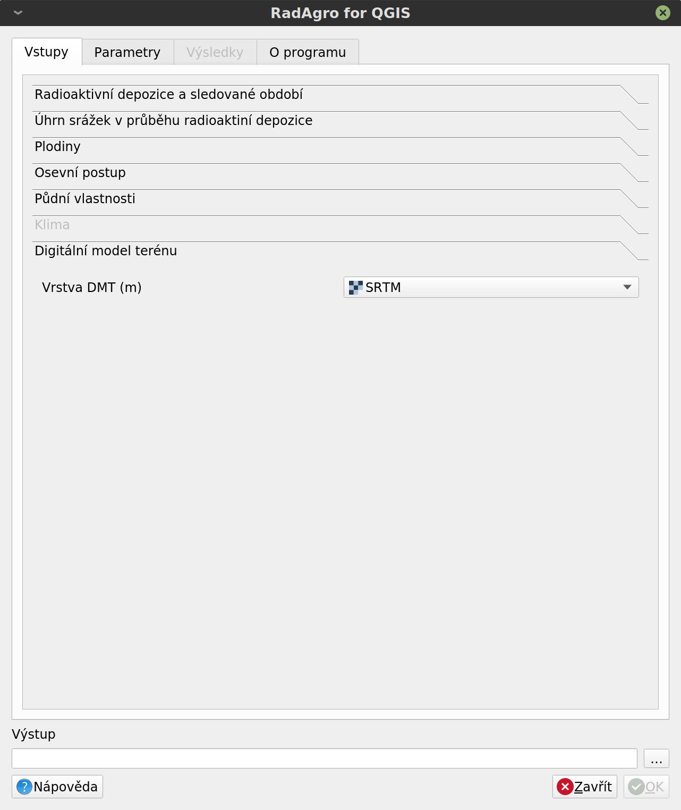{kind=link}
Vložení vrstvy digitálního modelu terénu
Nastavení parametrů výpočtu¶
Prvním krokem pro nastavení parametrů výpočtu je jejich načtení do uživatelského prostředí programu RadAgro. Načtení parametrů výpočtu provedeme v záložce Parametry, pomocí tlačítka Načíst parametry, viz. obrázek:
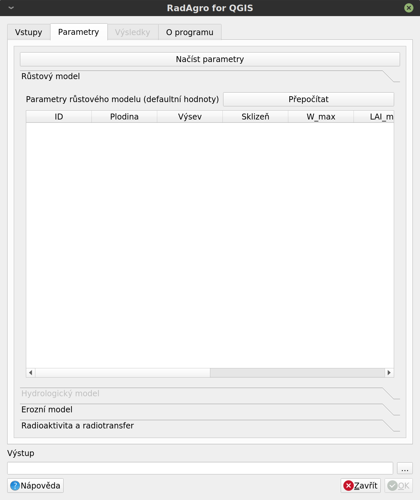{kind=link}
Nastavení parametrů výpočtu - prázdný formulář. Pro načtení parametrů výpočtu je potřeba kliknout na tlačítko Načíst parametry.
Po načtení parametrů výpočtu je možné jednotlivé parametry upravovat a měnit. Upravovat lze parametry pro růstový model, půdní erozi, hydrologické charakteristiky a transferové koeficienty.
Růstový model¶
Parametry růstového modelu představují zdrojová data pro výpočet růstových charakteristik plodin, zejména pak sušiny nadzemní biomasy a indexu listové pokryvnosti pro termín radiační události. Hodnoty parametrů jsou použity pro výpočet změn radioaktivní kontaminace v časné fázi radiační události. Podrobnosti k vlastnímu výpočtu jsou uvedeny v technické dokumentaci. Ukázkázka zadání dat je znázorněna na následujících obrázcích.
| 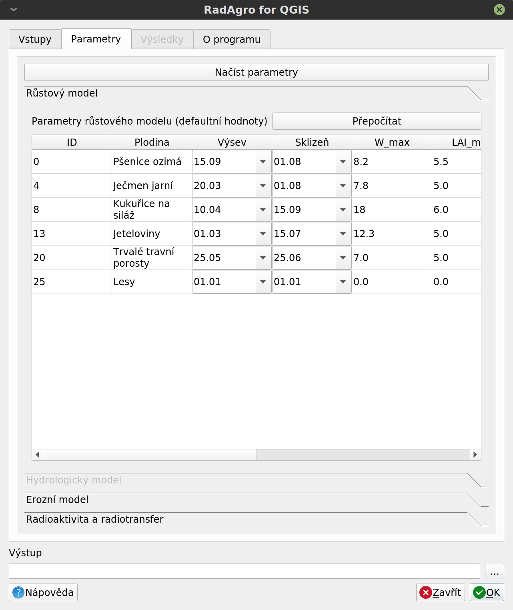 | 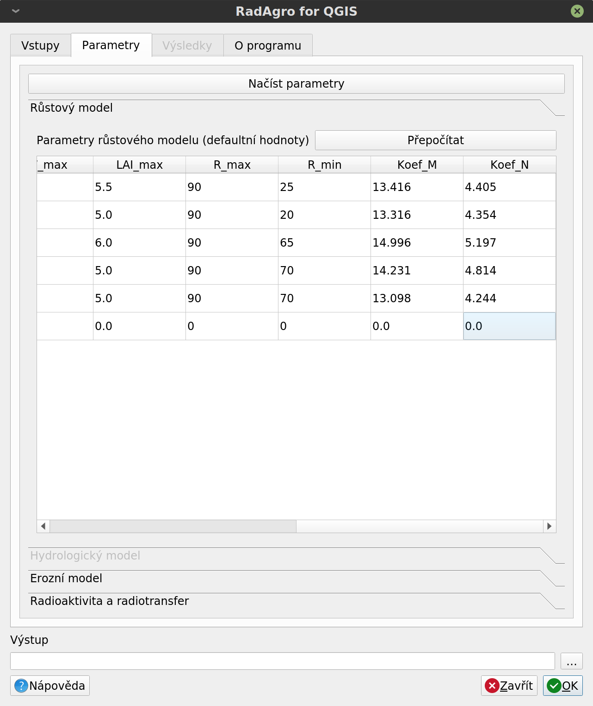 |
{kind=link}
{kind=link}
Ukázka nastavení parametrů růstového modelu pro jednotlivé plodiny. Hodnoty parametrů růstové křivky Koef_m a Koef_n lze automaticky přepočítat pomocí tlačítka Přepočítat.
Hydrologický model¶
Formulář pro práci s parametry hydrologického modelu je vaktuální verzi programu RadAgro nedostupný. Podrobnosti jsou uvedeny v technické dokumentaci.
Erozní model¶
Erozní model použitý v programu RadAgro vychází z Univerzální rovnice pro výpočet ztráty půdy (Universal Soil Loss Equation, USLE). Zadávané parametry představují vstupní data pro výpočet nebo přiřazení jednotlivých faktorů rovnice. Program přiřazuje parametry pouze zvoleným plodinám, případně Hlavním půdním jednotkám, které byly zvoleny v části Vstupy. Všechny parametry lze upravovat podle potřeby a lokálních specifik. Podrobnosti k modelu jsou uvedeny v technické dokumentaci, případně lze další informace najít v literatuře (např. Janeček a kol. 2012). Vstupní formulář pro zadání parametrů erozního modelu ukazuje následující obrázek.
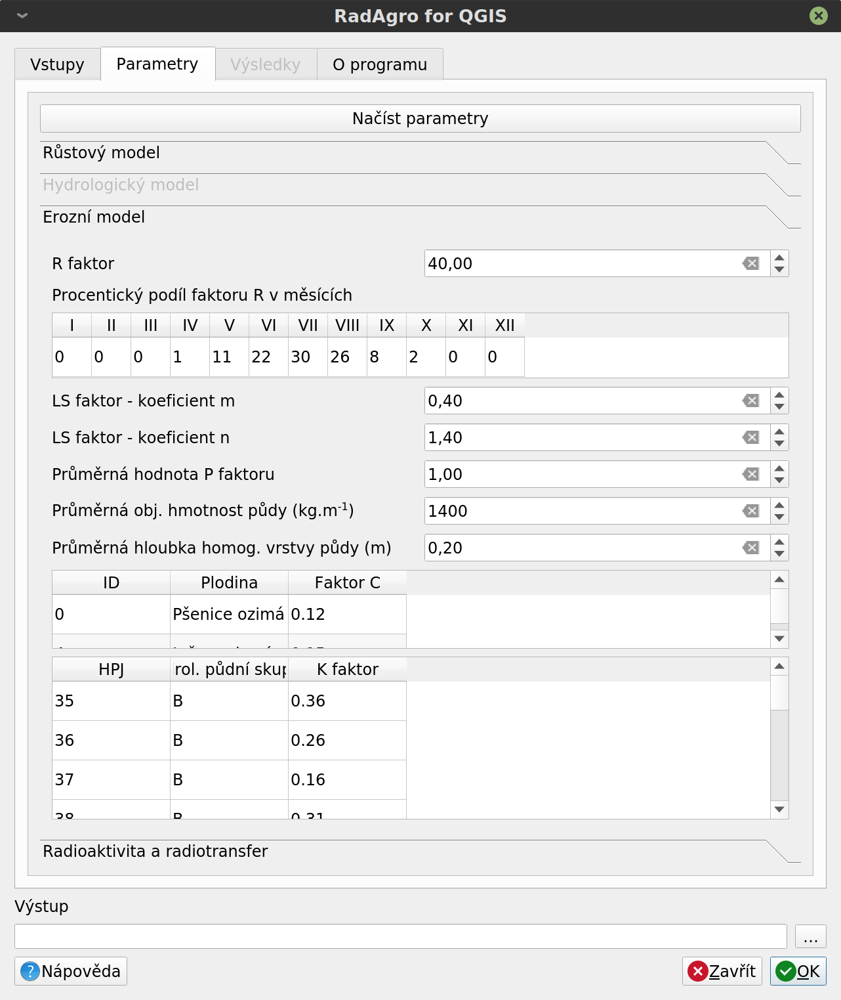{kind=link}
Obrázek ukazuje zadání parametrů pro výpočet eroze půdy
Radioaktivita a radiotransfer¶
List Radioaktivita a radiotransfer obsahuje tabulku přiřazení transferových koeficientů jednotlivým plodinám. Použity jsou střední hodnoty získané z literárních zdrojů. Koeficienty je možné upravovat podle potřeby. Zadání dat ukazuje obrázek.
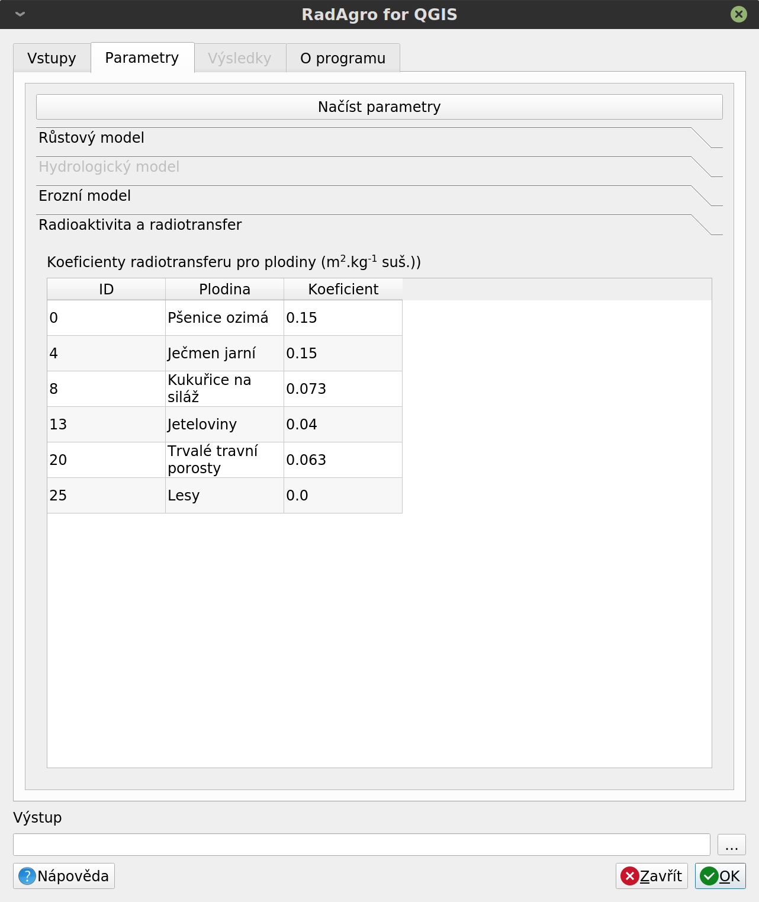{kind=link}
Zadání parametrů radioaktivního přenosu radionuklidu do nadzemní biomasy plodin.
Výstup¶
Do pole Výstup se zadává cesta k výstupnímu souboru, který bude vytvořen při výpočtu. Použijte tlačítko pro procházení adresářové struktury vpravo od textového pole.
Výsledky výpočtu¶
Výsledkem výpočtu změn radioaktivní depozice je vektorvá vrstva obsahující informace o časových změnách radioaktivní depozice pro jednotlivé obsažené polygony. Po provedeném výpočtu si lze prohlédnout výsledky v záložce Výsledky.
Výpočet výsledků je indikován indikátorem průběhu výpočtu v informačním řádku programu QGIS, kde je možné průběh výpočtu též ukončit.
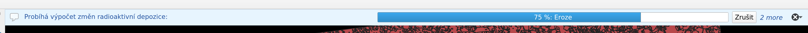Po dokončení výpočtu se v infromačním řádku programu QGIS zobrazí možnost načtení vypočtené vrstvy do prostředí QGIS.
Vektorová vrstva¶
Hlavním výsledkem výpočtu je vektorvá vrstva časových změn radioaktivní kontaminace jednotlivých ploch zájmového území. Plochy odpovídají původním plochám plodin.
Vektorová vrstva je ukládána ve formátu GeoPackage (GPKG). Jedná se o moderní geodatabázi založenou na otevřené platformě SQLite3, kterou lze používat ve většině dostupných GIS softwarech.
Maximální počet predikovaných měsíců v časovém období predikce je 1992, tzn. 166 let.
Následující obrázek ukazuje vektorovou vrstvu vypočtené radioaktivní kontaminace pro jednotlivé plochy zájmového území a dále je zobrazena atributová tabulku vrstvy s daty. Na podkladu snímku je patrná původní rastrová mapa radioaktivní depozice simulovaná programem HARP RP.
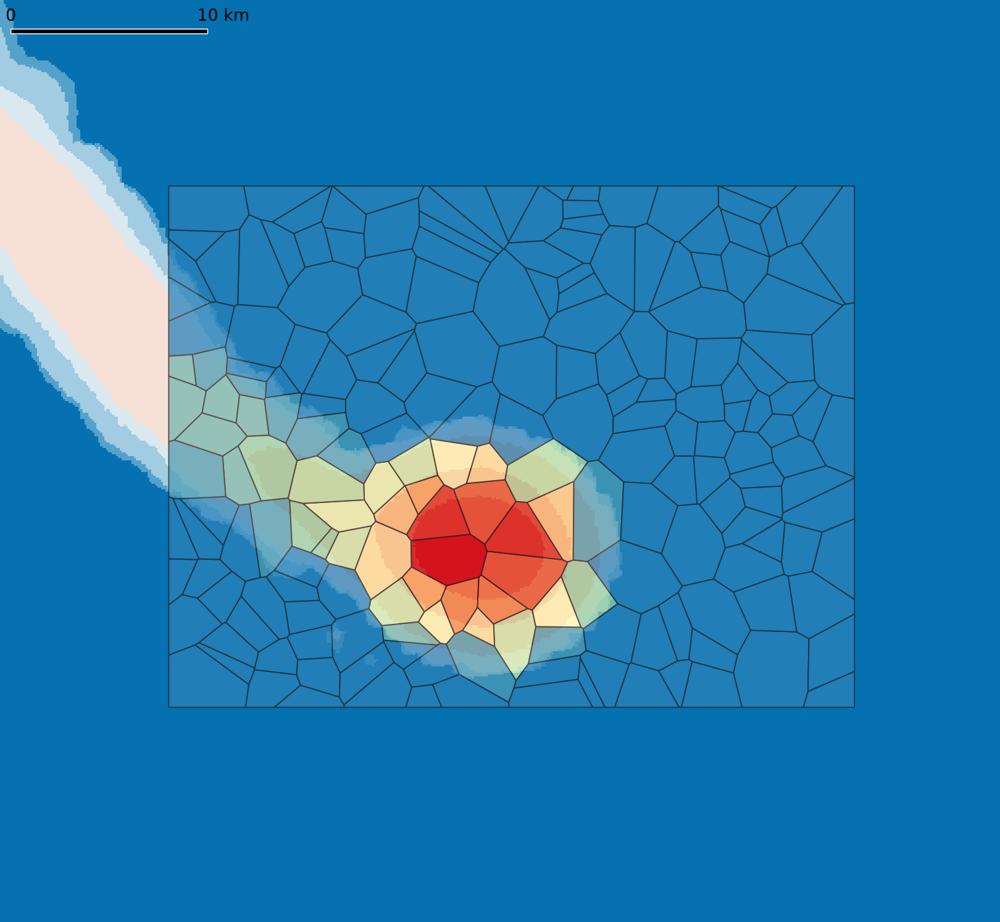Vektorová vrstvu vypočtené radioaktivní kontaminace pro jednotlivé plochy zájmového území. Na podkladu je patrná původní rastrová mapa radioaktivní depozice simulovaná programem HARP RP. Vektorová vrstva byla vytvořena formou náhodných Tiessenových polygonů.
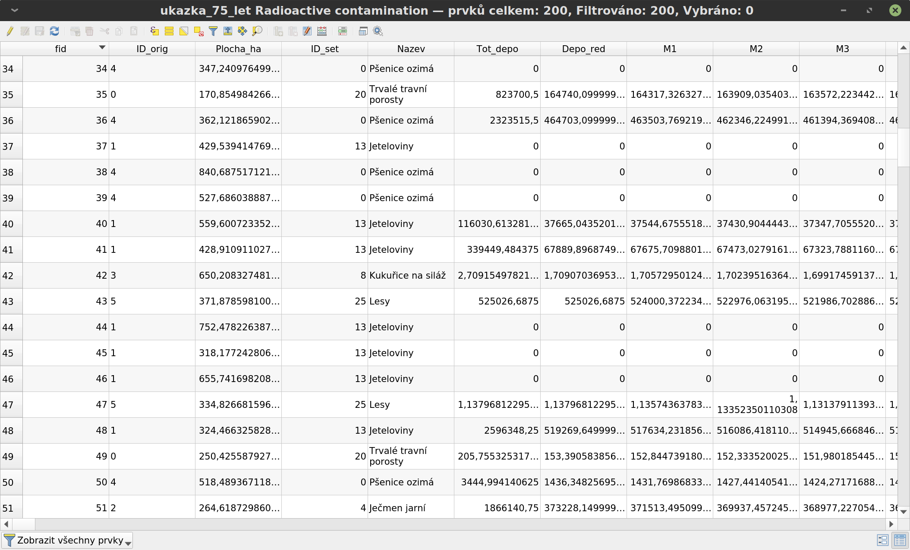Atributová tabulka vektorové vrstvy obsahující vypočtená data radioaktivní kontaminace pro jednotlivé měsíce. Popis významu jednotlivých sloupců je uveden v textu.
Atributová tabulka vektorové vrstvy obsahuje následující údaje:
- fid: Identifikační číslo polygonu
- ID_orig: Původní identifikace plodiny, která byla na dané ploše na začátku období predikce
- Plocha_ha: Plocha polygonu v ha
- ID_set: Nastavený identifikátor přiřazené plodiny
- Nazev: Název přiřazené plodiny
- Tot_depo: Měrná aktivita radioaktivní depozice
- Depo_red: Radioaktivní kontaminace redukovaná sklizní nadzemní biomasy plodin v časné fázi radiační události
- M1 - M…: Jednotlivé měsíce predikovaného období
Grafické znázornění výsledků¶
Program RadAgro obsahuje záložku Výsedky, která je zpřístupněna po dokončení výpočtu. Záložka obsahuje grafické znázornění časové řady pro jednotlivé polygony vektorové vrstvy. Mezi jednotlivými polygony lze přecházet v rozbalovacím seznamu buď pomocí šipky nebo lze zadat identifikační číslo (fid) daného polygonu. V grafu lze použít buď lineární nebo logaritmickou škálu osy Y, na které je vynesena měrná aktivita radioaktivní kontaminace dané plochy v , na ose X jsou vyneseny údaje o počádeční úrovni kontaminace (depozice), o redukované úrovni kontamnace po provedených opatřeních v časné fázi radiační události a dále je zaznamenán celý predikovaný časový vývoj radioaktivní depozice. Délka predikované časové řady není omezena.
Dále uvádíme několik ukázek vypočtených výsledků pro příklad jednoduchého osevního postupu pro polní plochy, ukázku výpočtu pro kosené trvalé travní porosty a pro les.
| 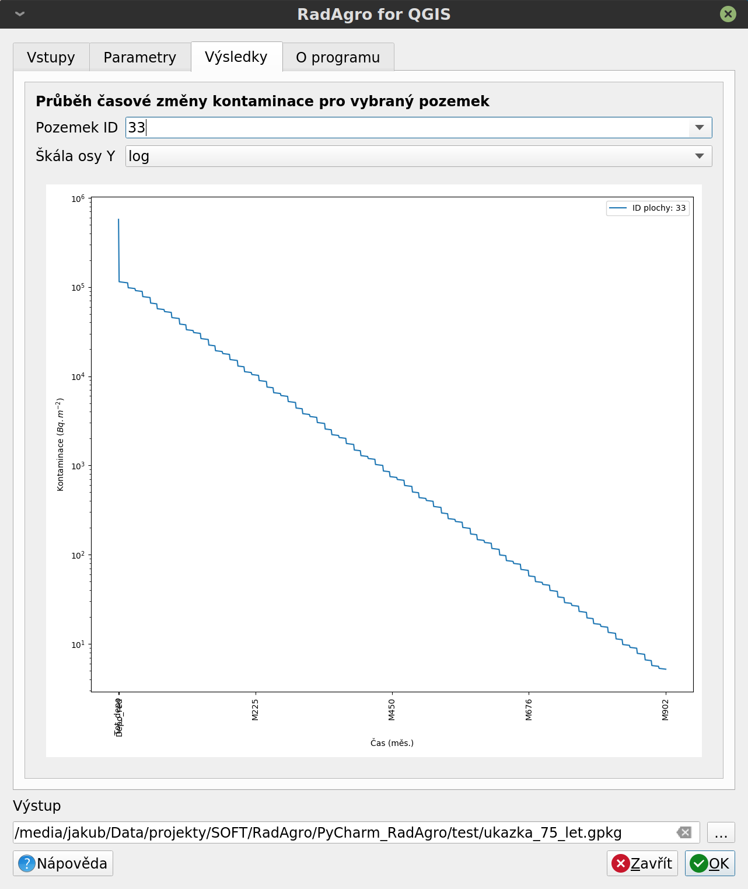 | 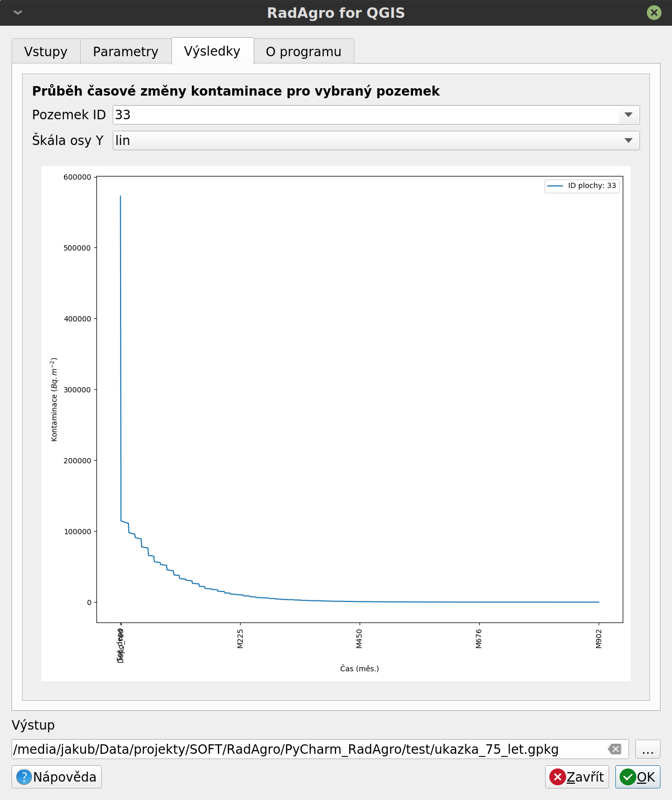 |
Ukázka zobrazení časové řady predikce v průběhu 75 let. Zobrazeny jsou výsledky pro polní plodiny v logaritmické a lineární škále.
| 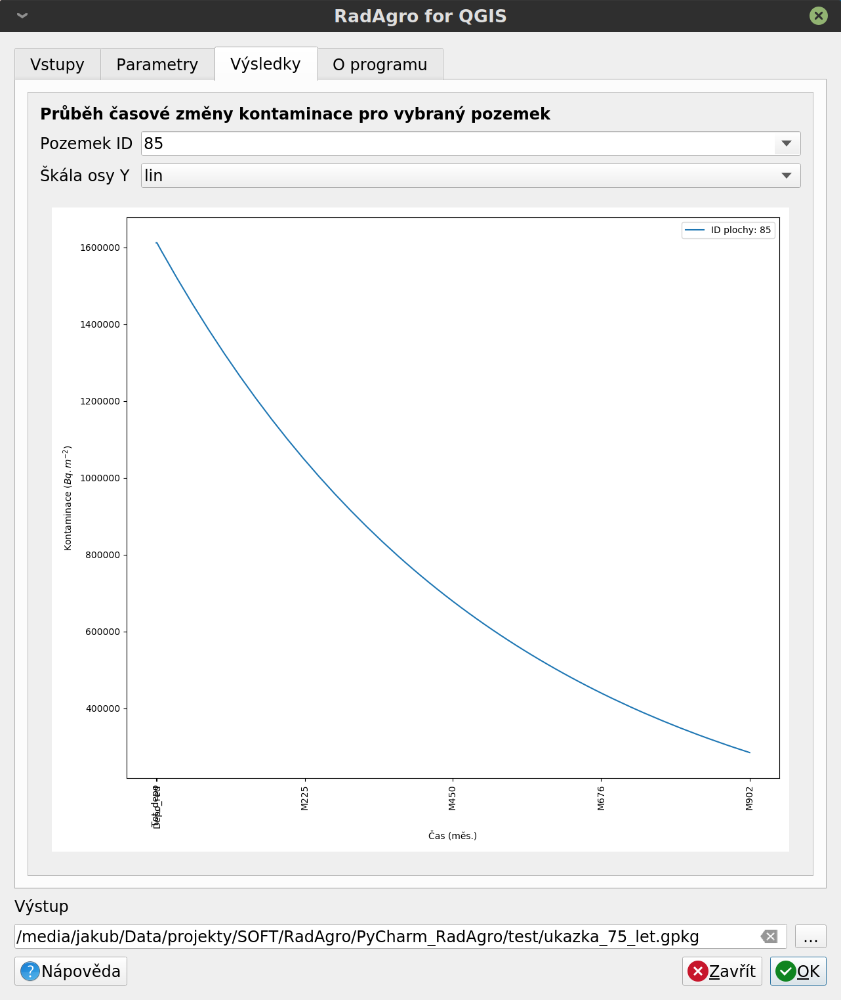 | 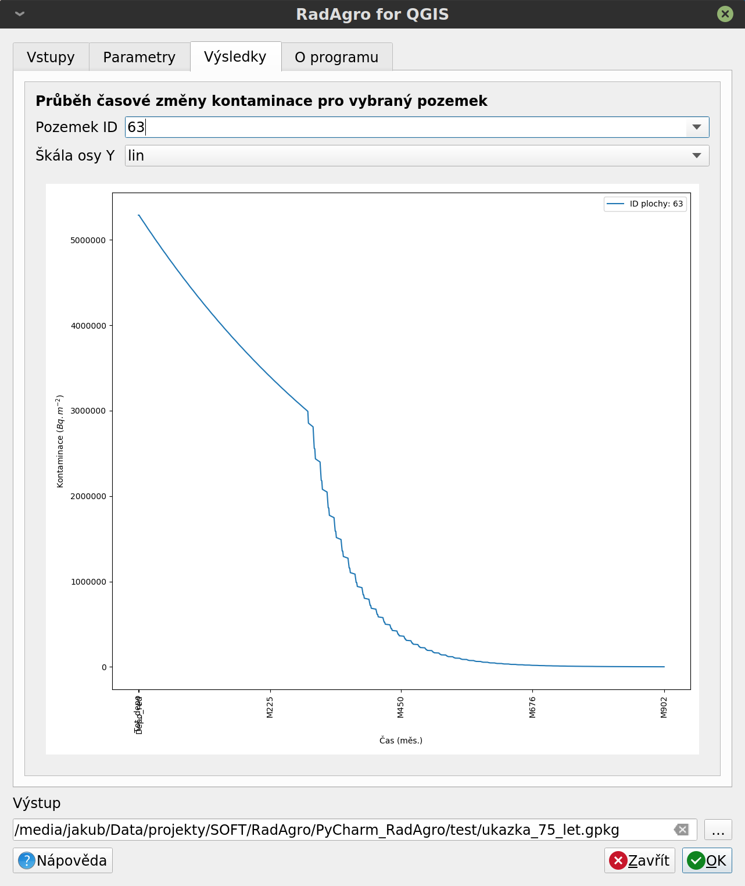 |
Porovnání průběhu vývoje radioaktivní kontaminace v průběhu 75 let od radiační události. Levý snímek ukazuje průběh v případě lesního porostu, kde nebyl aplikován žádný management, pravý snímek ukazuje kosený travní porost. Zde je zajímavostí změna trendu vývoje. Důvodem je změna managementu s ohledem na přechod plochy z referenční úrovně 3 do referenční úrově 2. V porovnání s vývojem kontaminace polní plochy na předchozím snímku můžeme vidět zásadní vliv odstranění kontaminované biomasy v časné fázi radiační události.
| 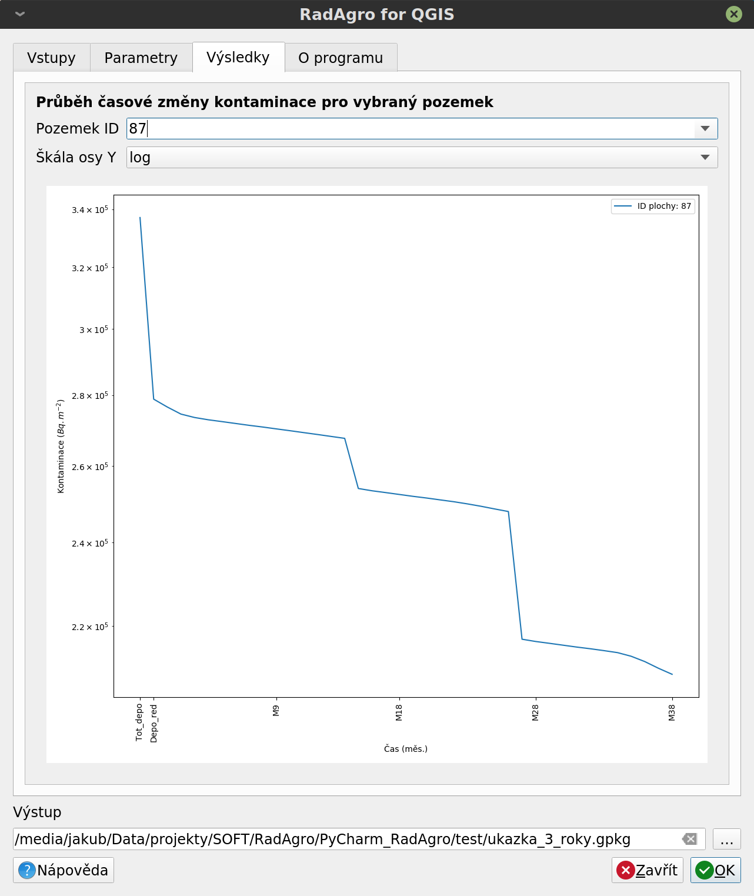 | 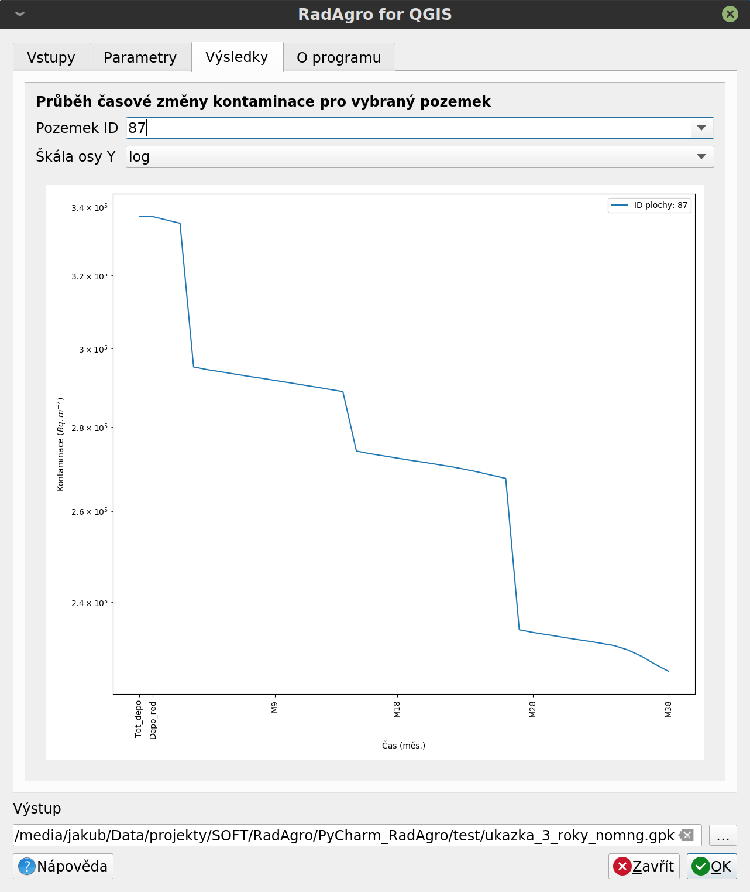 |
| 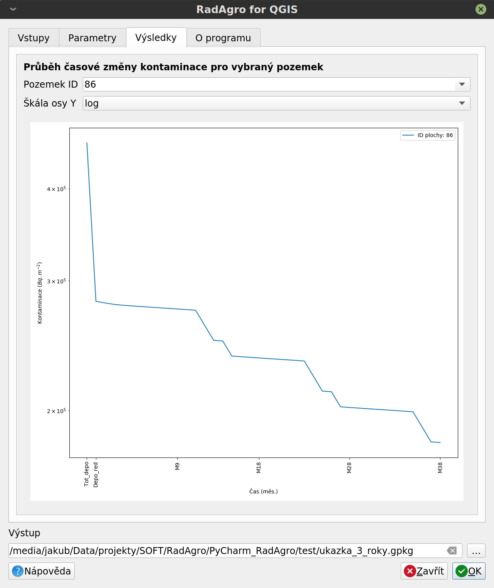 | 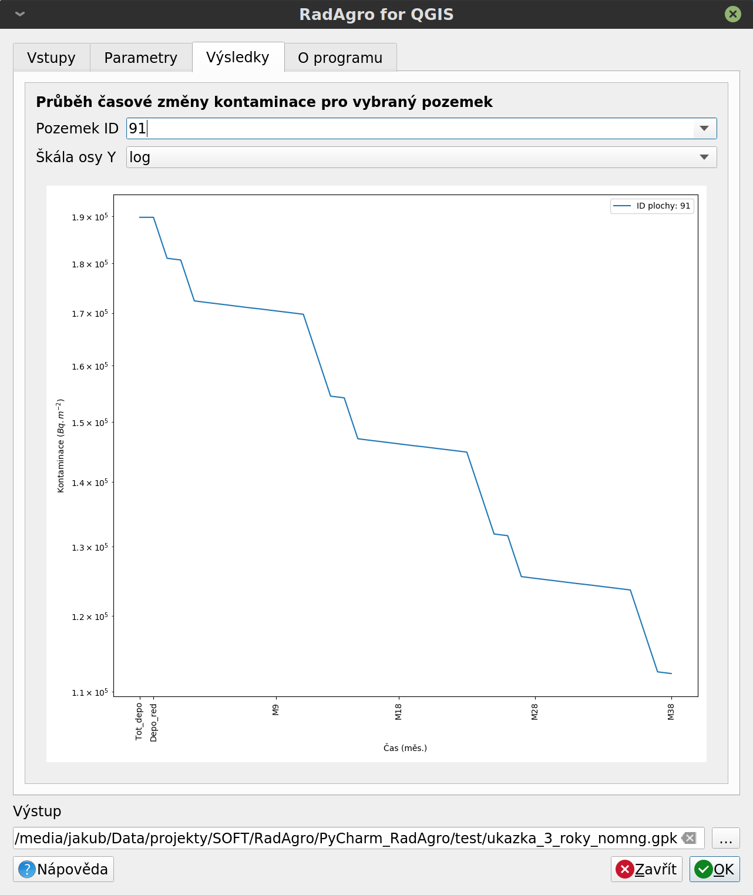 |
Porovnání změny kontaminace ve tříletém horizontu v případě provedeného opatření v časné fázi (odstranění nadzemní biomasy) a v případě pokračování běžného managementu. Zakřivení křivky v částech mezi „skoky“ je dáno vlivem eroze půdy, pokles pak radioaktivní přeměnou radionuklidu. Skoky jsou dány odstraněním nadzemní biomasy. Snímky v horní řadě jsou pro polní plochy, ve spodní řadě pro trojsečný trvalý travní porost.
Upozornění: v případě použití vektorového souboru s distribucí plodin ve formátu ESRI Shapefile může dojít k posunu ID hodnot jednotlivých polí v grafu. Jestliže soubor neobsahuje FID pole, jsou ID hodnoty sníženy o jednu jednotku (řada začíná od nuly).